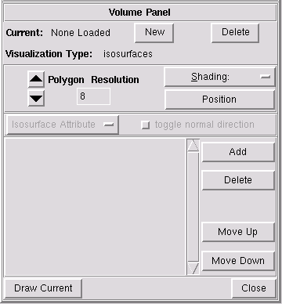

NVIZ Reference Manual
CONTENTS
Volume Panel
The Volume (voxels) panel controls how loaded volumes are
drawn. The bottom half of the panel has drawing style options. The top
half has options to add, delete, select, and change attributes of the
current volume.
-

OPTIONS
- Visualization type: Isosurfaces
- Sets the levels of values for drawing the volume(s) as
isosurfaces.
- Visualization type: Slices
- Sets the levels of values for drawing the volume as
cross-sections.
- Shading
- Sets the style of shading used for the volume.
-
- Gouraud
- Draws the volumes with a smooth shading to blend
individual cell colors together.
- Flat
- Draws the volumes with flat shading with one color for every
two cells. The volume appears faceted.
- New
- Loads a new volume or volume constant.
- Delete
- Deletes (unload) the current volume.
- Isosurface Attribute
- You can use this menu to control the attributes of the current volume.
First one or more isosurfaces have to be added with Add.
-
- threshold
- Loads a new raster or constant value to use as threshold
for the current volume isosurface.
- color
- Loads a raster or constant color to drape over the current
volume.
This option is useful for draping imagery such as aerial photography
over a DEM.
- mask
- Loads a raster or constant that controls the areas displayed
from the current volume.
- transparency
- Loads a raster or constant that controls the transparency of
the current volume.
The default is completely opaque.
- shininess
- Loads a raster or constant that controls the shininess
(reflectivity) of the current volume.
- emission
- Loads a raster or constant that controls the light emitted
from the current volume.
- Position
- Changes the x, y, and z position of the current volume.
- Draw Current
- Draws the current volume.
- Close
- Closes the Volume panel.